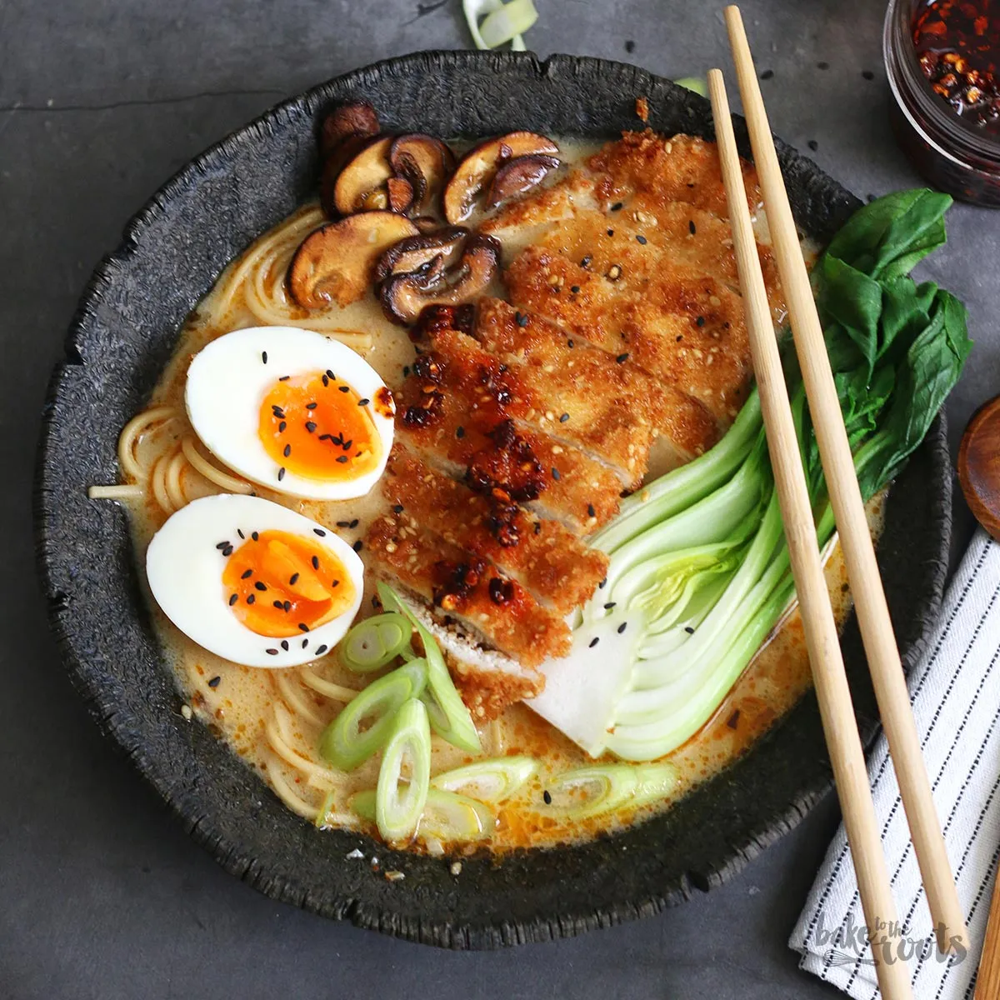

Tonkatsu Shoyu Ramen (Pork Cutlet Soy Sauce Ramen)

Description:
Tonkatsu Shoyu Ramen is a mouthwatering fusion of flavors, combining the richness of
crispy, golden-fried pork cutlet (tonaktsu) with the savory depth of soy sauce-based broth (shoyu).
The broth, simmered to perfection, offers a delicate balance of umami and subtle sweetness,
enveloping tender ramen noodles that are cooked to a perfect chew. Topped with the succulent pork
cutlet, soft boiled eggs, fresh green onions, and a sprinkle of sesame seeds, this dish offers layers
texture and taste in every bite. Each spoonful is a comforting blend of crispy, juicy pork and rich,
aromatic broth, making Tonkatsu Shoyu Ramen a satisfying and unforgettable meal.
Ingredients:
- 1 large egg
- 1 1/2 teaspoons spicy sesame oil
- 2 (1x3) boneless pork chop slices
- 1 tablespoon black sesame seeds, divided
- 2 leaves fresh basil, chopped, divided
- 1 leaf fresh sage, chopped, divided
- 1 (3 ounce) package instant ramen noodles (such as Shirakiku), seasoning packet discarded
- 3 tablespoons shredded dried kombu
- 1 3/4 tablespoons bonito soup stock (such as Hondashi)
- 1 3/4 tablespoons soy sauce (shoyu)
- 1/2 teaspoon white miso paste with dashi
Toppings:
- 4 1/3 inch slices fish past stick (naruto)
- 1 tablespoon tonkatsu sauce
- 1 tablespoon sushi ginger (shoga), finely chopped
- 1 green onion, thinly sliced
- 1 pinched ground black pepper
Instructions:
- Fill a small pot halfway with water. Bring to a boil; add egg and
cook in boiling water for 15 minutes. Drain. Run cold water over egg and set
aside to cool.
-
Pour sesame oil into a large skillet. Lay pork slices in oil. Cover pork with 1 tablespoon olive oil, 1/2 tablespoon
sesame seeds, 1/2 of the basil, and 1/2 of the sage. Flip and cover pork with these remaining ingredients:
1 tablespoon olive oil, 1/2 tablespoon sesame seeds, basil, and sage.
- Cook pork, covered, over medium-low heat, until evenly browned on the bottom, about 5 minutes. Flip and continue cooking until
second side is browned, about 5 minutes more. Removed from heat.
- Bring a large pot of water to a boil. Cook ramen noodles in boiling water until tender, about 3 minutes. Drain in a colander set
in the sink; rinse noodles until water runs clear. Return noodles to the pot.
- Stir kombu, bonito stock, soy sauce, and miso paste into noodles. Cook, stirring with chopsticks, over medium heat, until miso paste
is dissolved, 3-5 minutes. Transfer noodles to a serving bowl.
- Peel and cut egg in half lengthwise. Place egg, pork slices, and fish paste slices over noodles. Garnish with tonkatsu sauce, ginger,
green onion, and black pepper.
Homepage